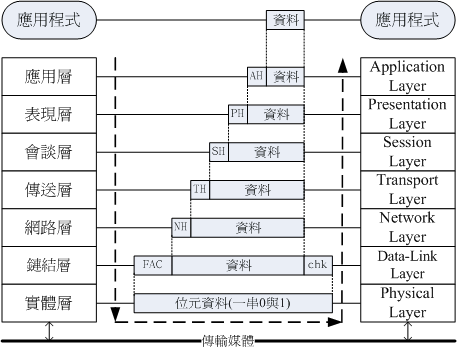
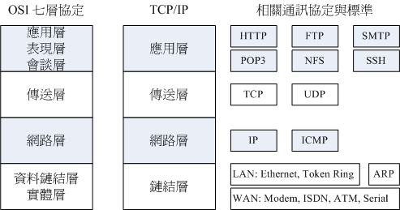

OSI七層協定
那怎辦？沒關係，我們可以將整個網路連接過程分成數個階層 (layer)，每個階層都有特別的獨立的功能， 而且每個階層的程式碼可以獨立撰寫，因為每個階層之間的功能並不會互相干擾的。 如此一來，當某個小環節出現問題時，只要將該層級的程式碼重新撰寫即可。所以程式撰寫也容易，整個網路概念也就更清晰！ 那就是目前你常聽到的 OSI 七層協定 (Open System Interconnection) 的概念囉！
如果以圖示來說，那麼這七個階層的相關性有點像底下這樣：

依據定義來說，越接近硬體的階層為底層 (layer 1)，越接近應用程式的則是高層 (layer 7)。 不論是接收端還是發送端，每個一階層只認識對方的同一階層資料。 而整個傳送的過程就好像人們在玩整人遊戲一般，我們透過應用程式將資料放入第七層的包裹，再將第七層的包裹放到第六層的包裹內， 依序一直放到第一層的最大的包裹內，然後傳送出去給接收端。接收端的主機就得由第一個包裹開始，依序將每個包裹拆開， 然後一個一個交給對應負責的階層來視察！這就是整人遊戲...喔！是 OSI 七層協定在階層定義方面需要注意的特色。
既然說是包裹，那我們都知道，包裹表面都會有個重要的資訊，這些資訊包括有來自哪裡、要去哪裡、接收者是誰等等， 而包裹裡面才是真正的資料。同樣的，在七層協定中，每層都會有自己獨特的表頭資料 (header)，告知對方這裡面的資訊是什麼， 而真正的資料就附在後頭囉！我們可以使用如下的圖示來表示這七層每一層的名字，以及資料是如何放置到每一層的包裹內：

上圖中仔細看每個資料包的部分，上層的包裹是放入下層的資料中，而資料前面則是這個資料的表頭。其中比較特殊的是第二層， 因為第二層 (資料鏈結層) 主要是位於軟體封包 (packet) 以及硬體訊框 (frame) 中間的一個階層， 他必須要將軟體包裝的包裹放入到硬體能夠處理的包裹中，因此這個階層又分為兩個子層在處理相對應的資料。 因為比較特殊，所以您瞧瞧，第二層的資料格式比較不一樣喔，尾端還出現一個檢查碼哩～
每一個階層所負責的任務是什麼呢？簡單的說，每一層負責的任務如下：
事實上， OSI 七層協定只是一個參考的模型 (model)，目前的網路社會並沒有什麼很知名的作業系統在使用 OSI 七層協定的聯網程式碼。那...講這麼多幹嘛？這是因為 OSI 所定義出來的七層協定在解釋網路傳輸的情況來說， 可以解釋的非常棒，因此大家都拿 OSI 七層協定來做為網路的教學與概念的理解。至於實際的聯網程式碼，那就交給 TCP/IP 這個玩意兒吧！
TCP/IP
既然 TCP/IP 是由 OSI 七層協定簡化而來，那麼這兩者之間有沒有什麼相關性呢？它們的相關性可以圖示如下， 同時這裡也列出目前在這架構底下常見的通訊協定、封包格式與相關標準：

從上圖中，我們可以發現 TCP/IP 將應用、表現、會談三層整合成一個應用層，在應用層上面可以實作的程式協定有 HTTP, SMTP, DNS 等等。 傳送層則沒有變，不過依據傳送的可靠性又將封包格式分為連接導向的 TCP 及非連接導向的 UDP 封包格式。網路層也沒有變，主要內容是提供了 IP 封包，並可選擇最佳路由來到達目標 IP 位址。資料鏈結層與實體層則整合成為一個鏈結層，包括定義硬體訊號、 訊框轉位元串的編碼等等，因此主要與硬體 (不論是區網還是廣域網路) 有關。
那 TCP/IP 是如何運作的呢？我們就拿妳常常連上的 Yahoo 入口網站來做個說明好了，整個連線的狀態可以這樣看：
- 應用程式階段：妳打開瀏覽器，在瀏覽器上面輸入網址列，按下 [Enter]。此時網址列與相關資料會被瀏覽器包成一個資料， 並向下傳給 TCP/IP 的應用層；
- 應用層：由應用層提供的 HTTP 通訊協定，將來自瀏覽器的資料包起來，並給予一個應用層表頭，再向傳送層丟去；
- 傳送層：由於 HTTP 為可靠連線，因此將該資料丟入 TCP 封包內，並給予一個 TCP 封包的表頭，向網路層丟去；
- 網路層：將 TCP 包裹包進 IP 封包內，再給予一個 IP 表頭 (主要就是來源與目標的 IP 囉)，向鏈結層丟去；
- 鏈結層：如果使用乙太網路時，此時 IP 會依據 CSMA/CD 的標準，包裹到 MAC 訊框中，並給予 MAC 表頭，再轉成位元串後， 利用傳輸媒體傳送到遠端主機上。
等到 Yahoo 收到你的包裹後，在依據相反方向拆解開來，然後交給對應的層級進行分析，最後就讓 Yahoo 的 WWW 伺服器軟體得到你所想要的資料，該伺服器軟體再根據你的要求，取得正確的資料後，又依循上述的流程，一層一層的包裝起來， 最後傳送到你的手上！就是這樣囉！
根據這樣的流程，我們就得要知道每個分層所需要瞭解的基礎知識，這樣才算學習網路基礎嘛！所以底下我們會依據 TCP/IP 的鏈結層、網路層、傳送層來進行說明，應用層的協定則在後續章節中有對應的協定再來談囉！同時我們也知道， 網路媒體一次傳輸的資料量是有限的，因此如果要被傳輸的資料太大時，我們在分層的包裝中，就得要將資料先拆開放到不同的包裹中， 再給包裹一個序號，好讓目的端的主機能夠藉由這些序號再重新將資料整合回來！很有趣吧！接下來就讓我們一層一層來介紹囉！